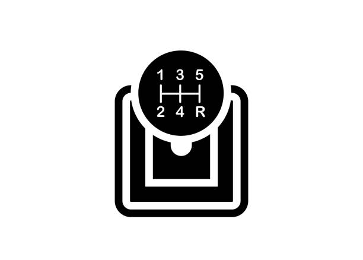

🏀 Me, Myself, and I 🏀
Welcome to my Basketball court. I am a student at NVCC. I am located in the Woodbridge campus. Please feel free to browse around in this space. I have included things that I like and media that I created using AI tools.
I chose a basketball court theme for my website because basketball has always been one of my favorite sports. However, I wanted this to be a space where I could share more about myself, including my interests and other things I enjoy in my free time.
Enjoy your browse, and I hope you will have a good time viewing my page.
How to drive a Manual Transmission Car

What you Need
- A Manual Transmission Car
- A safe, open area to practice
- An experienced driver or instructor
Directions
- Learn the three pedals: clutch, brake, and accelerator.
- Make sure the car is in Neutral, press the clutch, and start the engine.
- Keep the clutch pressed fully down and shift into first gear.
- Slowly release the clutch until you feel the biting point.
- Gently press the accelerator while releasing the clutch to begin moving.
- To change gears, release the gas, press the clutch in fully, shift gears, and smoothly release the clutch while accelerating.
- To stop, release the gas, apply the brakes, press the clutch before stalling, and shift into neutral before stopping.
- Now you can drive a stickshift. :)